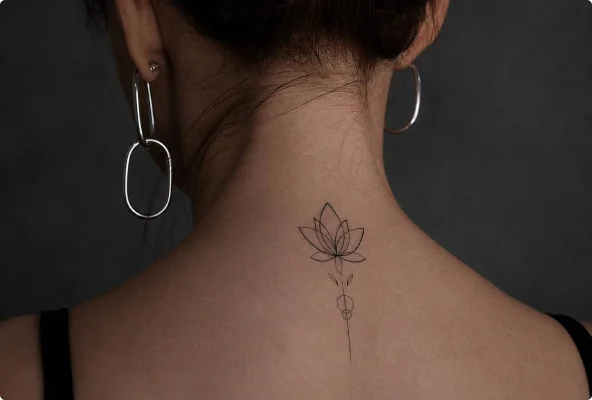

Растения
Значение татуировки «Лотос»
Лотос часто символизирует чистоту, возрождение и способность сохранять себя в сложных обстоятельствах.
Особенность растения в том, что оно поднимается из мутной воды и раскрывается над поверхностью. Из-за этого лотос стал образом внутреннего роста, преодоления трудностей и движения к более спокойному состоянию.
В буддийской и индуистской традициях лотос имеет глубокое духовное значение и связан с просветлением, чистотой и пробуждением. В современной татуировке его часто выбирают и вне религиозного контекста — как знак личного развития.
Важно учитывать, что цвет и композиция могут добавлять отдельные оттенки смысла, особенно если вы опираетесь на конкретную культурную традицию.
Значение татуировки не бывает единственно правильным: один и тот же символ может восприниматься по-разному в зависимости от культуры, композиции и вашей личной истории.
Обсудить татуировку